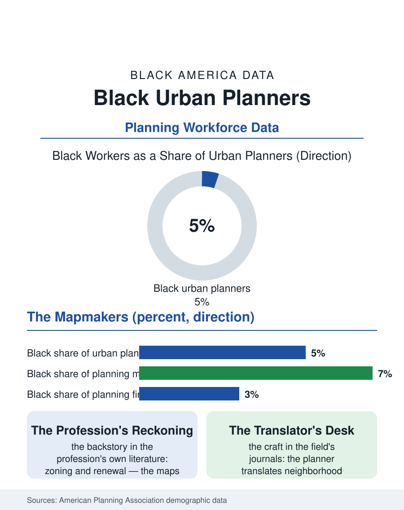

Black Employment
The Mapmakers: Black Urban Planners
The profession that drew the segregated map is five percent Black, and its planners now staff the repair, translating neighborhood knowledge into the plan's language. The planning file.

The urban planner decides, in the most literal professional sense, what gets built where: the zoning map, the comprehensive plan, the transit line, the park. The profession that drew the twentieth century's segregated geography is now charged with repairing it, and its own composition is part of the repair's credibility problem: Black planners hold roughly five percent of the profession's positions in the association's counts. This article reads the planning file.
The Profession That Drew the Map
Planning's history is the atlas's backstory professionalized. The zoning codes that sorted the races, the urban renewal plans that cleared the Black business districts of a hundred city files, the highway routes surveyed through Black neighborhoods, were planner's work, executed by a profession that counted virtually no Black members and answered to constituencies that excluded the planned-upon. The professional reckoning with that history is now part of the field's own literature and its ethics code, and the contemporary planner's toolkit, the equity analyses, the displacement studies, the community benefits frameworks, was substantially built in response to it. The pipeline data show the profession's present: planning master's programs enroll Black students in the mid-single digits, the accredited programs concentrate in universities whose geographies tilt away from the Black population centers, and the HBCU planning programs, a small set with distinguished records, carry an outsized share of the profession's Black formation, as the HBCUs do across this atlas. Municipal planning departments, the profession's largest employer, hire through civil service systems whose diversity mirrors their cities' governments, so Black planners cluster in the Black-led cities' departments and in the federal agencies, HUD above all, while the private consulting firms that do much of the profession's lucrative work show the partnership pattern of every consulting file here.
Whose Knowledge Counts as Data
The file's intellectual core is a fight about evidence. The comprehensive plan is built from data, traffic counts, land use inventories, market studies, and the community meeting, whose evening testimony the process records and too often files as anecdote against the consultant's model. Black planners describe their professional function, in the field's journals, as translation between those epistemologies: the neighborhood's knowledge of itself, the grandmother's account of the corner's flooding, the church's count of the displaced, rendered into the plan's technical language without being stripped of its authority, and the plan's constraints rendered back honestly. The gentrification era made the translation the profession's central ethical act, since the planner's map now moves capital as surely as the renewal maps did, and the anti-displacement toolkit, community land trusts, affordability requirements, right-to-return policies, is staffed substantially by the generation of Black planners and their allies who entered the field intending to wield it. The technical frontier, the geospatial and data science layer now standard in the larger departments, imports the technology workforce's demographics into planning's summit, one more sorting the pipeline data predict.
The Hearing at 7 P.M.
The profession's true workplace is the public hearing, and the hearing's demographics are the file's most honest data source: the room at city hall on a weeknight overrepresents homeowners, retirees, and the organized, and the planner's craft includes the deliberate counter-design, meetings in the neighborhood, at the church, on the weekend, with childcare and translation, that decides whose knowledge enters the record. Black planners run those rooms in the cities where they work with a fluency the profession's journals now teach as technique, closing the loop between the workforce's composition and the plan's legitimacy. The forward file is generational: the planning schools report rising applications from students motivated precisely by the repair agenda, the fellowship programs placing planners of color in city halls have scaled from pilots to institutions, and the profession's leadership has begun to turn over. The planning file closes with the zoning map on the hearing room wall, its colors deciding, parcel by parcel, the next fifty years of a Black neighborhood's life. Behind the map stands a profession five percent Black, up from zero within living memory, arguing in its own journals about whether five is a beachhead or a ceiling. The neighborhoods watching the map have heard both arguments before. Their testimony, as the planners in the room know better than anyone, is the data.
More in Black Employment
The Black Unemployment Rate: The Two-to-One Pattern
Black unemployment runs at roughly twice the White rate — 5.5 percent against 3.3 percent in annual averages — a ratio stable across five decades of federal data. How it is measured and why it persists.
Black Median Weekly Earnings: The 80-Cent Ratio
Black full-time workers earn a median of about $900 a week — roughly 80 cents for every dollar White workers earn. The BLS earnings data by group, gender, and occupation.
Black Labor Force Participation: Working at National Rates
Black labor force participation runs at roughly the national rate — and Black women participate at higher rates than White women. The BLS participation data.
Source: American Planning Association member demographic surveys; Association of Collegiate Schools of Planning enrollment data.